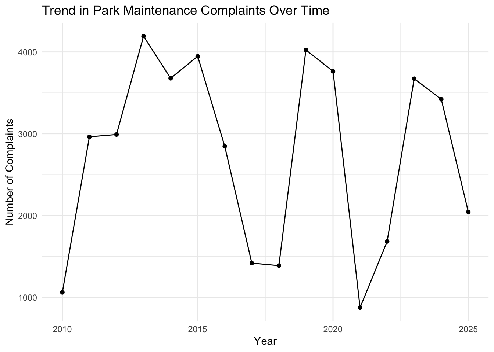
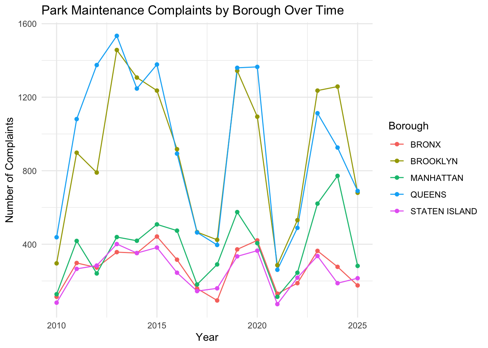
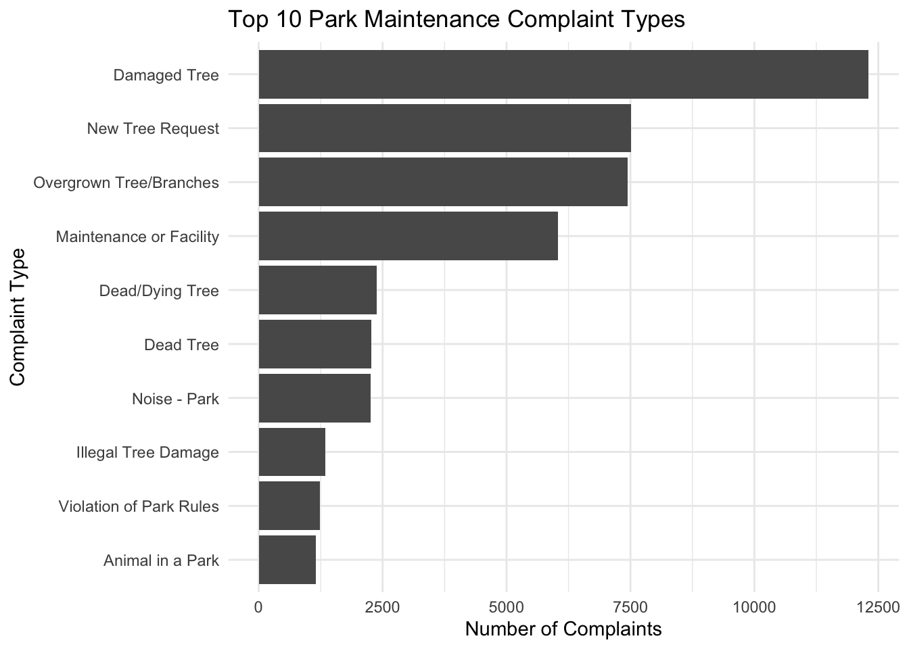
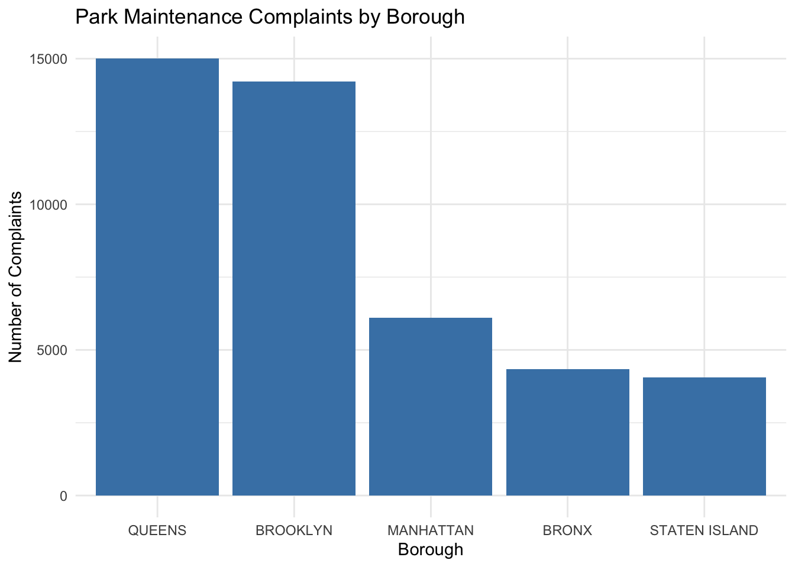

Code
library(tidyverse)STA 9750 Final Individual Project Report
Racheal Anthony
December 18, 2025
Equitable access to well-maintained public parks is an important component of urban quality of life. Parks support physical activity, mental health, social interaction, and environmental sustainability, particularly in dense cities like New York City. However, the benefits of public parks depend not only on their presence but also on how well they are maintained. Unequal maintenance across neighborhoods can reinforce broader spatial and social inequalities.
The overarching question of the group project asks whether access to and quality of park infrastructure is distributed equitably across New York City. My individual contribution focuses on the following specific question:
Are park maintenance complaints more common in some NYC boroughs than others?
By examining resident-reported park maintenance complaints through NYC’s 311 system, this analysis provides insight into where maintenance concerns are most frequently raised. While complaint data do not directly measure objective park quality, they reflect residents’ experiences and expectations regarding park conditions. Understanding borough-level differences in reported maintenance issues helps contextualize broader patterns of park access, use, and equity explored in the overall project.
This analysis uses data from NYC’s 311 Service Requests system, which allows residents to report non-emergency issues related to public services and infrastructure. The 311 dataset includes information on complaint type, location, borough, and date of submission, making it a valuable source for examining patterns in park maintenance concerns across the city.
For this project, I worked with a pre-processed sample of NYC 311 service requests stored as a local RDS file. The sample contains approximately 50,000 observations derived from NYC Open Data. Using a sampled dataset allows for efficient computation while preserving meaningful variation across boroughs and complaint types. Key variables used in this analysis include complaint type, borough, and complaint creation date.
Although the data are locally stored rather than dynamically accessed via an API, the dataset retains the structure and content of the original 311 records and is appropriate for borough-level descriptive analysis.
Because this analysis focuses on broad geographic patterns rather than individual parks, borough-level aggregation is an appropriate unit of analysis. Boroughs represent meaningful administrative and planning divisions within NYC Parks, and comparing complaint volumes at this level allows for clear, interpretable comparisons while remaining consistent with the scope of the overall project.
This approach reflects common collaborative research practice, where raw data acquisition and heavy preprocessing are performed once and downstream analyses are conducted reproducibly from a shared intermediate dataset.
In addition to its broad coverage, the NYC 311 dataset is particularly well-suited for this analysis because it captures residents’ perceptions of public space conditions rather than administrative assessments alone. Park maintenance issues such as litter, damaged trees, or facility concerns are often experienced directly by park users, and the decision to submit a 311 complaint reflects perceived service gaps or unmet expectations. As a result, complaint data provide a valuable demand-side complement to more traditional supply-side measures of park infrastructure and investment.
At the same time, it is important to acknowledge that 311 data reflect reporting behavior as much as underlying conditions. Boroughs with higher population density, greater digital access, or stronger civic engagement may generate more complaints even if objective park conditions are similar across areas. Despite these limitations, borough-level aggregation remains appropriate for this stage of analysis because boroughs represent meaningful administrative units within NYC Parks planning and resource allocation. Examining complaint patterns at this scale allows for clear, interpretable comparisons while remaining consistent with the broader project’s focus on spatial equity across New York City.
The raw 311 dataset contains a wide variety of complaint types unrelated to parks. To isolate park maintenance issues, I filtered the data using keyword matching on the complaint type field. Complaints referencing maintenance, trees, grass, litter, cleanliness, damage, or parks were retained for analysis. This approach ensures that the dataset focuses specifically on issues relevant to park upkeep rather than general city services.
In addition, records with missing or unspecified borough information were removed to allow for accurate geographic comparisons. Complaint creation dates were converted into year values to support time-based exploration of trends.
All data preparation steps were implemented using tidyverse tools to ensure clarity, reproducibility, and consistency. These cleaning decisions were necessary to create a focused and interpretable dataset that aligns with the research question.
The full NYC 311 dataset is extremely large and requires substantial preprocessing to isolate park-related complaints. As part of the group project workflow, a cleaned and sampled version of the dataset was created from NYC Open Data and shared among team members to ensure consistency and reproducibility across analyses. This report uses that shared dataset as its starting point, while fully documenting all subsequent filtering, transformation, and analytical steps performed for the individual research question.
#Filter to maintenance-related complaints
To assess borough-level differences in park maintenance complaints, I first summarized the total number of complaints by borough. This provides a high-level view of where maintenance concerns are most frequently reported.
The observed borough-level differences are likely shaped by a combination of structural and behavioral factors. Queens and Brooklyn are the two most populous boroughs and contain large numbers of parks, playgrounds, and street-adjacent green spaces, which may increase both the absolute number of maintenance issues and opportunities for residents to encounter and report them. Higher complaint volumes in these boroughs may therefore reflect greater exposure to park infrastructure rather than uniquely poor conditions.
Temporal patterns also provide useful context for interpreting these results. The overall upward trend in complaints over time may reflect growing awareness of the 311 system, changes in reporting norms, or increasing pressure on park infrastructure as population density and park usage rise. Periods of decline, such as during the early years of the COVID-19 pandemic, likely reflect reduced park usage and disruptions to normal reporting behavior rather than sudden improvements in maintenance quality.
Importantly, the stability of borough rankings across years suggests that these patterns are not driven by short-term shocks or isolated events. Instead, they point to persistent spatial differences in maintenance demand and reporting behavior. These findings support the relevance of borough-level comparisons as a meaningful lens for understanding disparities in park maintenance experiences across New York City.
# A tibble: 6 × 2
borough total_complaints
<chr> <int>
1 QUEENS 15010
2 BROOKLYN 14220
3 MANHATTAN 6113
4 BRONX 4334
5 STATEN ISLAND 4047
6 Unspecified 234 year n
1 2010 1059
2 2011 2962
3 2012 2990
4 2013 4192
5 2014 3678
6 2015 3947
7 2016 2846
8 2017 1417
9 2018 1386
10 2019 4024
11 2020 3764
12 2021 873
13 2022 1682
14 2023 3673
15 2024 3422
16 2025 2043To examine whether these patterns are consistent over time, I analyzed complaint trends by year. The total number of park maintenance complaints generally increases across years, suggesting either growing maintenance needs, increased awareness of the 311 system, or both.
##Plot trend over years

When broken down by borough, the relative ranking of boroughs remains largely stable over time. Boroughs with high complaint volumes continue to report more issues year after year, indicating that these differences are not driven by isolated events. ##Borough × Year trend
#Plot

Figure 2: Annual trend in park maintenance complaints across NYC. Complaint volumes increase over time, likely reflecting both rising maintenance demand and increased use of the 311 reporting system.
Finally, I examined the most common types of park maintenance complaints. The dominant categories relate to cleanliness, litter, tree maintenance, and general park conditions, indicating that routine upkeep is a central concern for residents.
complaint_type n
1 Damaged Tree 12305
2 New Tree Request 7510
3 Overgrown Tree/Branches 7444
4 Maintenance or Facility 6035
5 Dead/Dying Tree 2385
6 Dead Tree 2265
7 Noise - Park 2255
8 Illegal Tree Damage 1346
9 Violation of Park Rules 1238
10 Animal in a Park 1153#Plot top complaint types

#Visualization: Park Maintenance Complaints by Borough
library(ggplot2)
ggplot(
complaints_by_borough %>% filter(borough != "Unspecified"),
aes(x = reorder(borough, -total_complaints),
y = total_complaints)
) +
geom_col(fill = "steelblue") +
labs(
title = "Park Maintenance Complaints by Borough",
x = "Borough",
y = "Number of Complaints"
) +
theme_minimal()
Figure 3: Total number of park maintenance complaints by borough. Queens and Brooklyn report substantially higher complaint volumes than other boroughs, while the Bronx and Staten Island report fewer complaints. This pattern suggests persistent borough-level differences in reported maintenance needs.
The analysis shows that park maintenance complaints are not evenly distributed across NYC boroughs. Queens and Brooklyn consistently report the highest number of complaints, while the Bronx and Staten Island report substantially fewer. These patterns remain stable over time and are driven primarily by routine maintenance concerns such as cleanliness and tree care rather than rare or unusual issues.
These findings suggest that residents in certain boroughs experience greater maintenance challenges or are more likely to report such issues, highlighting spatial differences in perceived park conditions across the city. While this analysis does not adjust for borough population or park acreage, the consistency of borough rankings over time suggests that these differences are structural rather than driven by short-term fluctuations.
Taken together, these results provide a clear and consistent answer to the specific research question posed in this analysis. Park maintenance complaints are indeed more common in some NYC boroughs than others, with Queens and Brooklyn exhibiting substantially higher complaint volumes relative to Manhattan, the Bronx, and Staten Island. While complaint counts alone do not establish causal explanations, the persistence of these differences across time suggests that they reflect underlying structural patterns rather than temporary anomalies.
These findings contribute directly to the overarching project question by highlighting uneven maintenance demand across the city. Differences in reported maintenance issues may signal disparities in park usage intensity, infrastructure strain, or responsiveness to resident concerns. When considered alongside complementary analyses of park access, amenities, and investment, complaint-based evidence helps build a more complete picture of how park quality and user experience vary spatially across New York City.
It is important to note that 311 complaints measure reported concerns, not objective park quality. Complaint volumes may be influenced by population size, park availability, awareness of the 311 system, and residents’ willingness to file reports. As a result, higher complaint counts do not necessarily indicate worse park conditions, but rather higher expressed demand for maintenance.
Additionally, this analysis does not adjust for the number or size of parks within each borough, which may affect complaint volume. These factors should be considered when interpreting the results.
Reporting behavior may also vary systematically across boroughs due to socioeconomic factors, language access, or differing levels of trust in government reporting systems. Communities with lower access to digital tools or limited awareness of the 311 platform may underreport maintenance concerns, potentially masking unmet needs. Conversely, higher complaint volumes may reflect stronger civic engagement rather than worse park conditions. These limitations underscore the importance of interpreting complaint data as indicators of perceived conditions and expressed demand rather than direct measures of maintenance quality.
By focusing on resident-reported maintenance concerns, this analysis contributes an important demand-side perspective to the broader project on park equity and access. When combined with complementary analyses of park availability, infrastructure, and usage, these findings help develop a more complete understanding of how park resources and maintenance needs are distributed across New York City.